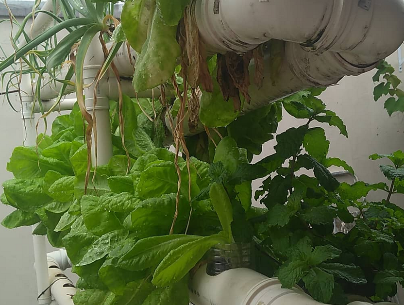
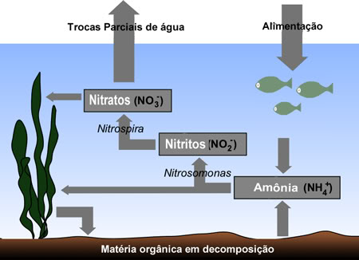

Seja bem-vindo ao guia definitivo da **Aquaponia Brasil**. Montar seu próprio sistema é mais simples do que parece, mas exige atenção aos detalhes técnicos que garantem a vida dos peixes e das plantas.

Um ecossistema equilibrado: peixes e plantas em harmonia.01. O Reservatório (Tanque)
Comece com uma caixa d'água atóxica (Polietileno). Para iniciantes, o ideal é entre 500L e 1000L. Posicione-a em um local plano e que suporte o peso final.

02. Circulação e Bomba
A bomba deve ser capaz de girar o volume total do tanque pelo menos 2 a 3 vezes por hora. Sem circulação, não há oxigênio e os peixes morrem.
Dica do Fábio: Nunca economize na bomba. É o coração do sistema. Tenha sempre uma reserva para emergências!
Equipamentos para Começar


03. Filtragem e Biologia
A água do tanque deve passar por um filtro mecânico (para tirar a sujeira pesada) e depois pelas mídias biológicas, onde as bactérias transformam amônia em adubo para as plantas.

04. A Cama de Cultivo
Utilize argila expandida ou brita para fixar as plantas. É aqui que a mágica acontece: as raízes filtram a água e crescem com os nutrientes dos peixes.

O aprendizado é constante. Cada erro é um ajuste para um sistema mais resiliente. Se você já tem os equipamentos básicos, comece a ciclagem da água imediatamente!